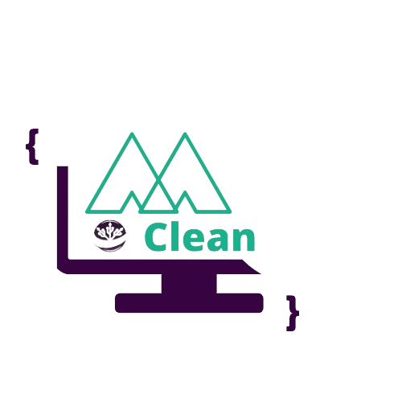
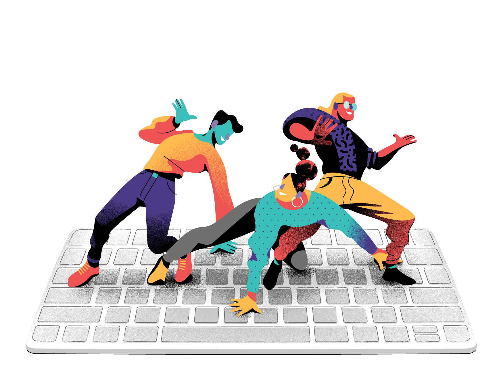

<mat-sidenav-container class="sidenav-container">

  <mat-sidenav #drawer class="sidenav" fixedInViewport [attr.role]="(isHandset$ | async) ? 'dialog' : 'navigation'"
    [mode]="(isHandset$ | async) ? 'over' : 'side'" [opened]="(isHandset$ | async) === false">


    <mat-toolbar style="color: #4F3B56; text-align: center;">𝐌𝐄𝐍𝐔 <button mat-button class="menu-button"
        style="width: 50px;">
        <mat-icon routerLink="/log">exit_to_app</mat-icon>
      </button></mat-toolbar>


    

    <mat-divider></mat-divider>

    <br>
    <div class="ct-perfil">
      <div class="avatar">
        <!--  -->
      </div>

      <div class="box" style="text-align: center; margin: 5%;">
        <p class=" designation" style="color: #B4E4D3;font-weight: bold;"> Seja </p>
        <h3 class="name" style="color: #4F3B56; font-weight: bold; border: 1px #4F3B56;"> Bem-vindo </h3>

      </div>
    </div>
    <br>

    <mat-divider></mat-divider>
    <br>
    <mat-nav-list class="box">
      <button mat-button class="menu-button">
        <mat-icon>event</mat-icon>
        <span> Mapeamento </span>
      </button>

      <button mat-button class="menu-button">
        <mat-icon>computer</mat-icon>
        <span routerLink="/navigation-mapping"> Recursos </span>
      </button>

      <button mat-button class="menu-button">
        <mat-icon>person</mat-icon>
        <span routerLink="/navigation"> Usuarios </span>
      </button>
      
      <button mat-button class="menu-button">
        <mat-icon>people</mat-icon>
        <span routerLink="/navigation-base"> Cadastrar </span>
      </button>
      <br>
      <br>
      
    </mat-nav-list>
  </mat-sidenav>
  <mat-sidenav-content>
    <mat-toolbar color="primary" style="color: #4F3B56; background-color: #9f9f9f;">
      <button type="button" aria-label="Toggle sidenav" mat-icon-button (click)="drawer.toggle()"
        *ngIf="isHandset$ | async">
        <mat-icon aria-label="Side nav toggle icon">menu</mat-icon>
      </button>
      <span>𝐂𝐋𝐄𝐀𝐍 𝐌𝐀𝐏𝐏𝐈𝐍𝐆</span>
    </mat-toolbar>

    <div class="content mat-elevation-z8" style="border-radius: 40px;">
      <app-base></app-base>
      <!-- Add Content Here -->
    </div>
    
  </mat-sidenav-content>
</mat-sidenav-container>
